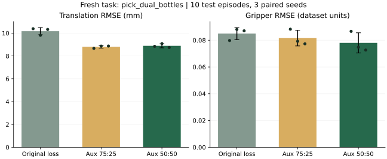

分开检验位置，
也检验夹爪。
18 次旧任务验证选择、9 次新任务训练，加一次跨节点完整复现检查。权重先选定，新任务测试后打开；全部条件和否定结果保留。
均衡监督缓解夹爪取舍，变化阶段仍弱于原损失。
新任务上，相对原辅助监督，均衡分组的夹爪 RMSE 下降 4.4%，位移 RMSE 增加约 1.0%。相对原损失，位移 RMSE 变化 -12.7%，夹爪 RMSE 变化 -8.2%；后者的配对差区间跨零，尚不能确认整体夹爪改善。这是离线读出，不是成功率。
上一轮按 8 个坐标平均，位移组占 75%、夹爪组占 25%。本轮只比较夹爪占 50% 与 75% 两个候选，保持辅助总系数为 1、冻结 DINO、48 维 S-VAE、2000 步与三个配对种子。
新任务：双臂抓瓶
| 条件 | 位移 RMSE / mm | 夹爪 RMSE | 位移归一化 MSE | 夹爪归一化 MSE | 特征重建 MSE |
|---|---|---|---|---|---|
| 原损失 | 10.174 | 0.0849 | 0.3619 | 0.0345 | 0.1503 |
| 原辅助监督 75:25 | 8.799 | 0.0816 | 0.2749 | 0.0318 | 0.1672 |
| 选定分组 50:50 | 8.887 | 0.0780 | 0.2787 | 0.0292 | 0.1644 |

柱为三个训练种子的平均 RMSE，误差条为种子标准差；散点显示每个种子。读出器按分量独立拟合，正则化只用验证轨迹选择。
| 对照 | 分量 | RMSE 相对变化 | 归一化 MSE 差 [配对 95% 区间] |
|---|---|---|---|
| 原辅助监督 / 原损失 | 位移 | -13.5% | -0.08695 [-0.12530, -0.04422] |
| 原辅助监督 / 原损失 | 夹爪 | -4.0% | -0.00263 [-0.00929, +0.00495] |
| 选定分组 / 原损失 | 位移 | -12.7% | -0.08320 [-0.11907, -0.04232] |
| 选定分组 / 原损失 | 夹爪 | -8.2% | -0.00527 [-0.01283, +0.00271] |
| 选定分组 / 原辅助监督 | 位移 | +1.0% | +0.00374 [-0.00202, +0.00888] |
| 选定分组 / 原辅助监督 | 夹爪 | -4.4% | -0.00264 [-0.00437, -0.00100] |
区间通过重采样 10 条测试轨迹计算，三个训练种子固定；不是所有随机性或多重比较下的确证区间。负值表示该误差指标更低，跨零表示方向仍不确定。
旧任务验证集如何决定权重
| 夹爪组权重 | 旧任务 | 位移 MSE / 原辅助 | 夹爪 MSE / 原辅助 | 夹爪 MSE / 原损失 |
|---|---|---|---|---|
| 0.5 | adjust_bottle | 1.062 | 0.852 | 0.629 |
| 0.5 | handover_block | 1.054 | 0.958 | 0.995 |
| 0.5 | place_object_basket | 1.064 | 0.957 | 0.826 |
| 0.75 | adjust_bottle | 1.218 | 0.814 | 0.601 |
| 0.75 | handover_block | 1.142 | 0.901 | 0.936 |
| 0.75 | place_object_basket | 1.129 | 0.964 | 0.832 |
表内是三个种子平均 MSE 的比值，1 表示相同。先约束相对原辅助监督的位移退化，再选夹爪误差较低的候选；推广还要求每个旧任务夹爪 MSE 不超过原损失的 1.05 倍，以及宏平均位移 MSE 不超过原损失的 0.95 倍。完整门槛与无合格候选时的固定处理见方案。
旧任务测试集本轮没有重新评测。新任务固定为 pick_dual_bottles，50 条轨迹按 35/5/10 划分。权重选择完成后才训练新任务的三组压缩器，所有训练完成后再计算测试指标。
夹爪发生变化时
| 条件 | 夹爪变化片段数 | 位移 RMSE / mm | 夹爪 RMSE |
|---|---|---|---|
| aux0 | 19/120 | 6.700 | 0.1425 |
| aux1 | 19/120 | 4.909 | 0.1519 |
| g0.5 | 19/120 | 5.193 | 0.1481 |
提前定义：四个原始时间步内任一夹爪的实际状态变化至少 0.05 数据单位。这里只是变化片段，不是接触标签。本次仅 19/120 个片段满足条件：均衡分组的夹爪 RMSE 约 0.1481，仍高于原损失的 0.1425（约 +3.9%）；原辅助监督为 0.1519。总体平均改善没有消除变化阶段的取舍。子集小，不能直接推断抓取成功率。
发布策略的运行验证
完整发布策略已通过两张真实训练轨迹观测的推理检查：20 维动作与 16 维执行接口转换均为有限值。10 步同步去噪、DiT 缓存开启，编译关闭；没有执行动作，不构成闭环评测。
下载策略推理记录已完成仿真闭环 smoke：5/5。只评测原发布策略、一个 clean 任务、5 次实际执行；不是新压缩器效果，也不是论文全套复现。编译关闭、无规划器回退。按真实计数汇报，保留原始结果文件的分母问题。
闭环执行记录五次执行视频全部保留，首个视频对应第一个 episode；没有筛选成功案例。
Episode 0 · seed 100000
Episode 1 · seed 100001
Episode 2 · seed 100002
Episode 3 · seed 100003
Episode 4 · seed 100004
本轮实验压缩器是按任务从头训练的；它们与发布策略的潜空间未验证兼容。不能直接替换后把动作变化解释为模型改进，需要策略适配与配对闭环评测。
额外发现：smoke 结果文件的分母错误
OpenWAM 的包装器能把实际评测缩到 5 次，但配套 RoboTwin 主函数仍用 100 计算结果文件。进度日志计数正确。独立 CPU 复现中，5 次全部成功的模拟返回值被写成 0.05；小补丁修复为 1.0，原 100 次默认行为保持一致。
这是评测集成问题，修复位于 RoboTwin；没有修改本轮正在执行的上游代码。补丁可干净应用，尚未发送 PR。
最小修复补丁CPU 复现结果这轮能贡献什么
可独立提交的贡献仍是可复现评测工具，以及把位移与夹爪分开报告的诊断证据。分组权重实验帮助区分总误差下降与不同控制信息之间的取舍；不能据此声称 RAE 优于 VAE。
新任务上各自拟合压缩器，属于独立任务复验，不是零样本迁移。发布的冻结编码器可能见过相关数据，无法宣称独立于其预训练。10 条测试轨迹和短训练预算限制了结论。本轮不再扩大权重搜索。
完整记录
原始对照的跨节点 2000 步复现参数差为 0。测试开启记录包含选型文件的校验值。数值复现 · 测试开启记录
公开上游：发布策略 · RoboTwin 数据 · OpenWAM 代码。